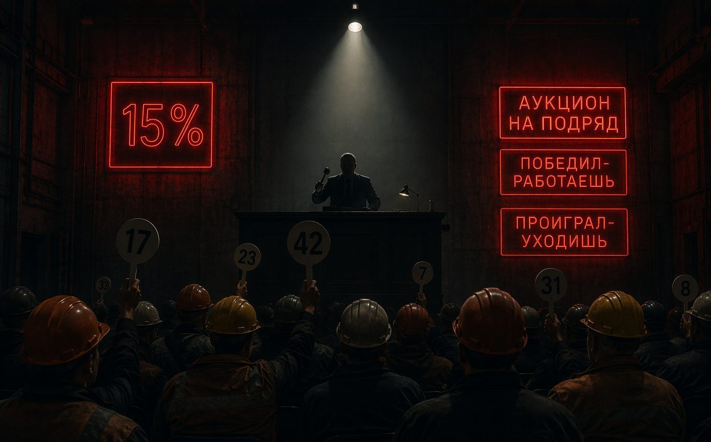

ТЕНДЕР / ДЕМПИНГ = ЛОВУШКА
Скидка 15% на тендере — это не конкуренция. Это отбор жертв

Тендер. 5 участников. Вы предложили скидку 15% — самую большую. Конкуренты от 8% до 12%. Вы выиграли. «Отлично!» — думаете вы. «Убьём конкурентов ценой, а на допах отыграемся». Генподрядчик думает иначе. Он знал, что выиграет тот, кто предложит самую низкую цену. Потому что он планировал не платить полностью никому. Вы не выиграли тендер. Вас выбрали.
Как работает тендерная ловушка
- Генподрядчик объявляет тендер с формулировкой: «Цена — ключевой критерий (70%)»
- Субподрядчики вынуждены снижать цену до себестоимости и ниже
- Победитель — тот, кто предложил самую низкую цену, часто не посчитав расходы
- Генподрядчик подписывает договор на этой цене
- В договоре: «Дополнительные работы только с письменного согласования», «Претензии по качеству — штраф до 10%», «Гарантийное удержание 10% на 3 года»
- Субподрядчик работает в минус, пытается «отыграться на допах», но генподрядчик не согласовывает
- Результат: субподрядчик обанкротился. Генподрядчик находит нового.
Это не строительство. Это конвейер поглощения субподрядчиков.
Мои цифры: по плану +2 млн, по факту −10 млн
| Статья | По плану | По факту |
|---|---|---|
| Стоимость работ | 40 млн ₽ | 40 млн ₽ |
| Себестоимость (реальная) | 38 млн ₽ | 42 млн ₽ (перерасход) |
| Допы (не согласованы) | 0 | 5 млн ₽ |
| Штрафы | 0 | 3 млн ₽ |
| Гарантийное удержание 10% | Возврат через 2 года | Возврат через 2 года, но компания банкрот |
| Итого | +2 млн прибыли | −10 млн убытка |
4 ошибки, которые ведут в ловушку
- «Скидка 15% — я перебью конкурентов» — если вы перебиваете конкурентов ценой, а не качеством, вы говорите генподрядчику: «Я не умею считать свои расходы».
- «На допах отыграюсь» — допы требуют письменного согласования до начала работ. Без этого — ваши убытки.
- «Тендерные документы — формальность» — в них прописаны условия договора. Вы подписали заявку = согласились с условиями.
- «Задаток по тендеру — мелочь» — 1–5% от цены. Если генподрядчик отказывается от договора — он должен вернуть двойной задаток. Но в договоре прописано: «Генподрядчик вправе отказаться без объяснения причин».
5 правил участия в тендере
- Считайте до цены. Реальная себестоимость + риски (10–15%) + налоги + финансовые издержки + минимальная маржа. Если цена тендера ниже — не участвуйте.
- Читайте тендерные документы как договор. Проверьте: порядок оплаты, гарантийное удержание, порядок согласования допов, штрафы, право расторжения.
- Требуйте банковскую гарантию или аккредитив. Не соглашайтесь на прямые платежи.
- Не начинайте без подписанного договора. Никаких «уже начнёте, договор донаберём».
- Зафиксируйте допы ДО начала работ. Письменное уведомление → согласование сметы → только потом работы.
Что делать, если уже попали
- Остановитесь и посчитайте: сколько потратили, сколько ещё потратите, какова реальная прибыль/убыток.
- Зафиксируйте все допы: фото, акты, переписка, письменные уведомления.
- Не подписывайте КС-2 без допов. Или подписывайте с оговоркой.
- Защититесь от штрафов: каждая претензия должна быть в письменной форме, с конкретным описанием, актом обследования, сметой устранения.
- Иногда лучше потерять задаток, чем выполнить объект в минус 10 млн.
ПЛАТНЫЙ КОМПЛЕКТ
Комплект «Дополнительные работы: как получить оплату»
Как согласовать, оформить и оплатить дополнительные работы: приказ на дополнительный объём, уведомления, акт скрытых работ, расчёт стоимости, журнал допработ, чек-лист фотофиксации и алгоритм оформления. 10 файлов.
2 490 ₽
Купить комплект →БЕСПЛАТНО, ЗА EMAIL
Договор субподряда: красные флаги до подписи
Скидка на торгах отыгрывается условиями договора, который подпишут следом. Чек-лист красных флагов показывает, где именно её отыграют, пока подпись ещё не поставлена.
- Чек-лист красных флагов
- Реестр проверки условий
- Что нельзя подписывать, не показав юристу
- Запрос на корректировку до подписи